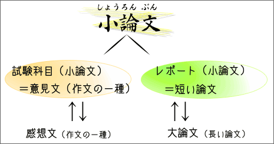
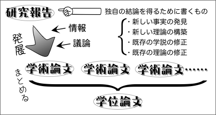

小論文の種類
小論文には、試験科目としての小論文と、レポートとしての小論文とがある。

試験科目としての小論文
試験科目としての小論文とは、大学入試や就職試験の際に、受験者たちが書く（書かされる）ものである。思考力、理解力、分析力、表現力、人間性などを総合的に評価できるものと考えられており、多くの学校や会社で試験科目として導入されている。
しかし、試験科目としての小論文は、実際には意見文を書くように求める場合がほとんどである。「論文」という名前がついているものの、実際には「作文」である。【参考：作文とは何か】
レポートとしての小論文
レポートとしての小論文は、「研究報告」とか「ノート」とか呼ばれることもある。いずれにせよ、これらは「作文」ではなく、「論文」である。ただし、一般的な学術論文に比べて長さが短いために「小論文」と呼ばれるのである。
小論文の長さ
論文や小論文の長さに明確な基準があるわけではないが、標準的な長さの目安を示せば次のようになろう。
- 学術論文（雑誌論文）
- A4サイズ10〜20ページ（10000〜20000字）
- 学位論文（卒業論文、修士論文、博士論文）
- A4サイズ100〜200ページ（100000〜200000字）
- 小論文
- A4サイズ１〜５ページ（1000〜5000字）
研究報告
研究報告とは、学術的な研究の成果をまとめたもののことである。研究報告は、研究の方法（調査、実験、観察など）や研究の結果、それらの分析や考察を記述するだけでなく、独自の結論（新しい事実の発見、新たな理論の構築、既存の学説や理論の修正など）を得ることを目指すものである。

なお、学術論文や学位論文も独自の結論を得ることを目指している点は研究報告と同じである。一般には、詳細な情報を加えるなどして研究報告を発展させたものが学術論文であり、学術論文を集めてまとめたものが学位論文だといえる。
ノート
研究者が書く小論文は、「ノート」と呼ばれることがある。ノートには、主に研究ノートとショートノートとがある。
研究ノートは、内容の実証性（実験や調査によって裏付けられていること）よりもアイディアの紹介に重点を置いた論文のことである。アイディアのユニークさがポイントとなるため、一般的な学術論文よりも短くなることが多い（ただし、長いものもある）。
ショートノートとは、研究者が自分の研究の内容や結果を速報するために書く短い論文のことである。後で一般的な学術論文にまとめなおされることが多い。